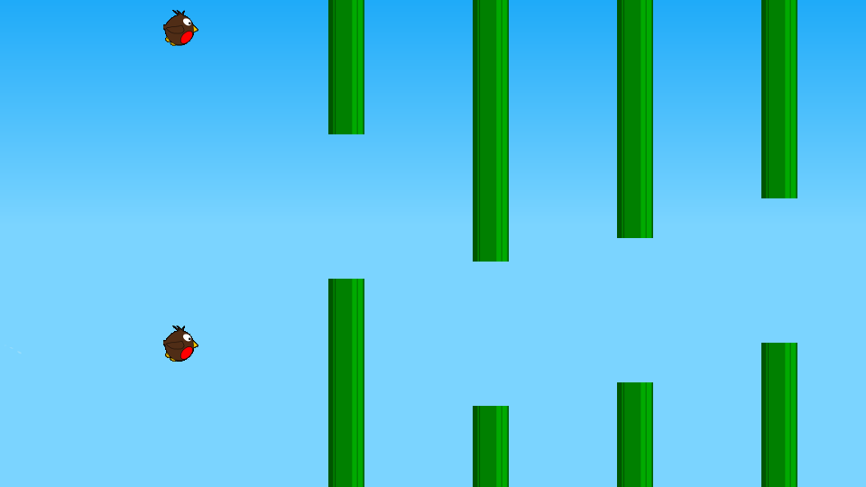
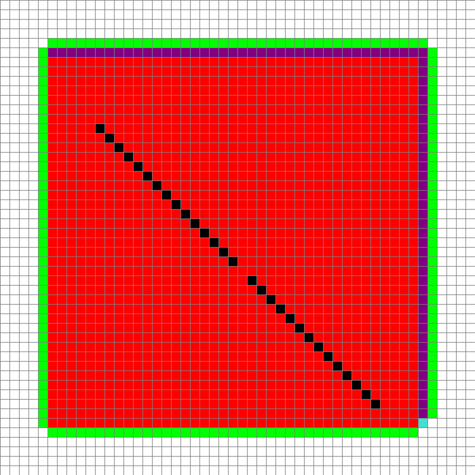
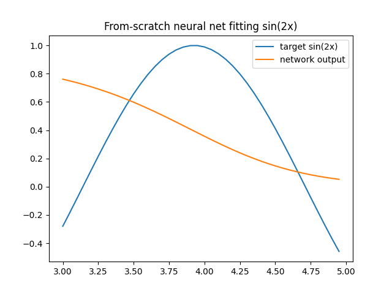

Algorithms & simulation
Python projects
A path tracer, a NEAT network that learns Flappy Bird, an A* visualizer and more - built from scratch to understand how each algorithm works.

Small programs I wrote from scratch to understand how algorithms really work. I wrote them before using AI tools.
- 6projects
- 0ML frameworks used
- 3videos
Path tracer
A CPU path tracer written from first principles: ray-sphere hits, diffuse bounces, 8 bounces and 150 samples per pixel.
Flappy Bird learns to fly
A NEAT-style network evolves over generations. Each bird has its own small brain, and the best survive.

A* pathfinder
Place a start, an end and walls with the mouse, then watch A* search the grid. Red cells are visited. The path is the result.

Neural network from scratch
Only numpy, no framework. It learns a sine curve using finite-difference gradient descent.

MazeRush
A two-player first-person maze race in Small Basic, for a Year 9 assignment. Mazes come from a depth-first backtracker. Walls are drawn by ray marching, 70 rays across 90 degrees.
Also built
- Tic-tac-toe AIs: two minimax versions and a neural network.
- A wave function collapse prototype.
- A VEX IQ score calculator.